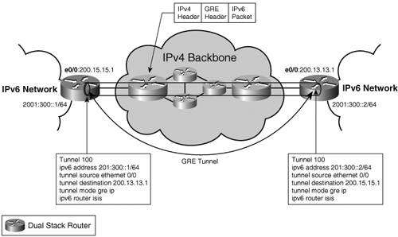
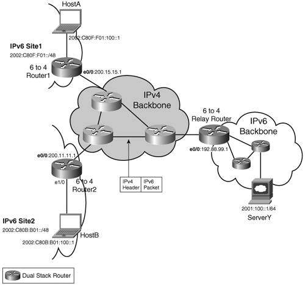
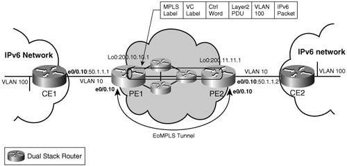
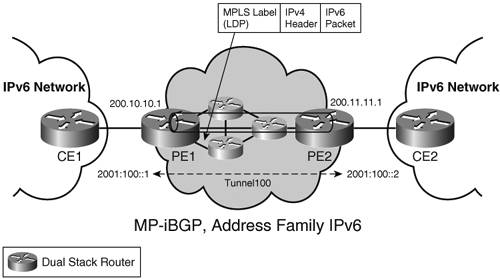
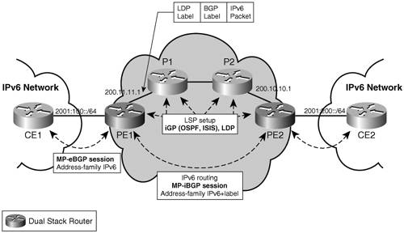

IPv6 over the BackboneThe backbone network can be defined as the network portion of the communication system that provides aggregation, interconnection, and transfer between network accesses defined in the "IPv6 Network Access" section. In a simple case, the backbone network is a single ISP infrastructure. Considering the complexity of the Internet, the backbone network is a combination of enterprises and ISP networks. In a typical topology, the backbone starts at the enterprise and spreads over several ISPs. Note that although some of the methods for transporting IPv6 customer traffic over the backbone assume that the backbone itself supports IPv6, others envision the case where it does not. In that context, the transitioning and coexistence mechanisms are of primary importance. There are basically three different approaches for deploying IPv6 over the backbone:
The long-term objectivesfor instance, deploy some IPv6 service (for an enterprise), offer an IPv6 access (for the ISP), transition from IPv4 to IPv6should drive tactical as well strategic choices. In the most likely scenarios, where IPv4-based networks are dominant in the backbone, tactical choices will typically deal with tunnel deployments, whereas dual-stack backbones will be seen as the long-term strategy. Tunnels tend to be initially cheaper to deploy because they deal with a subset of the backbone nodes. On the dark side, they deliver suboptimal paths in most cases while causing packet overhead (in the form of an extra header). Tunnels also carry some configuration and management overhead, which grows with the number of tunnels, getting to a crossing point where it becomes more cost-effective to migrate to dual-stack backbone. When tunnel mechanisms are used to transport IPv6 traffic over the backbone, tunnel endpoints can always be set up between edge-router pairs (PE) or between customer-router pairs (CE). Networks where a layer 2 transport technology or MPLS have been already deployed may keep IPv6 on the edge for a long time. IPv6 connectivity across the backbone can be set up with multiple segments managed independently, using a variety of IPv6 transport mechanisms. For instance, the enterprise could decide to deploy a dual-stack network, and be attached to an MPLS ISP providing native IPv6 access through 6PE, itself connected to a second ISP providing IPv6 over IPv4 tunnels. The IPv6 traffic across the backbone will follow these network segments, so the mechanisms reviewed hereafter become building blocks assembled to enable IPv6 connectivity end to end. Although a particular enterprise or ISP will make its own choices and set up its own strategy for transporting IPv6 traffic, it will also have to deal with choices and strategies of other networks with which it is peering. Native IPv6The backbone network can provide the IPv6 connectivity by enabling IPv6 on all routers and the links interconnecting them. In theory, nothing prevents the backbone from being IPv6 only, but it remains likely that an existing IPv4 network will coexist with the IPv6 network. You have several strategies to choose from when deploying the IPv6 network:
In all of these cases, the IPv6 topology is likely to be different from the IPv4 topology. The IPv6 routers need to be configured with routing protocols, interface addresses, ACLs, QoS, and so on. Chapter 4, "IPv6 Routing Protocols," discusses routing protocols, but the extra configuration and operation costs of running two sets of routing protocols in the backbone are worth mentioning in the dual-stack approach. Although the dual-stack approach carries twice the complexity of single stack, it appears to be the natural choice in the long run. It is the only one that allows separating at the finest level IPv4 and IPv6 topologies and services in the core. It is also the only approach that does not have to worry about traversing NATs (when leaving the enterprise boundaries), and it can support IPv6 multicast properly. However, before investing in a dual-stack deployment throughout the backbone, remember that tunneling mechanisms offer a reasonable intermediary step. Many tunneling mechanisms exist, and they are covered throughout the remainder of this chapter. You should see, however, that dual-stack deployments do not compete with tunneling; instead, they complement each other during the transitioning period. IPv6 over IPv4 TunnelsWhen the backbone network does not support IPv6, some tunneling mechanism is required. IPv6 over IPv4 tunnels encapsulates IPv6 traffic into IPv4 packets to traverse the IPv4 backbone. Many tunneling mechanisms are available for deploying IPv6: They differ by the location of the tunnel endpoints and the way these endpoints are determined. All of them, however, require the tunnel endpoints to be dual stack. Two tunnel mechanisms have started to emerge in the context of an IPv4-only backbone: MCTs, among which IPv6 over IPv4 GRE tunnel is one; and automatic tunnels, in particular 6 to 4 tunnels. Other tunneling mechanisms, typically deployed on hosts, are discussed in the "IPv6 Network Access" section. IPv6 over GREIPv6 over Generic Routing Encapsulation (GRE) tunnels represent another type of MCT; the first example of such was introduced in the "IPv6 Network Access" section. It enables IPv6 traffic forwarding over an existing IPv4 infrastructure, with minimum changes. Tunnel endpoints can be set up between provider edges. The tunnel endpoints are dual-stack routers, which encapsulate IPv6 traffic into IPv4, with both tunnel source and destination configured manually for GRE. Tunnels over GRE, specified in RFC 2473 and RFC 1701, have an extra encapsulation header (GRE header), with the protocol type of the encapsulated protocol (0x86DD for IPv6). This enables protocols other than IP to share the same tunnel (for instance, IS-IS) running over a layer 2 data link. Figure 3-13 shows an example of an IPv6 over GRE tunnel. Figure 3-13. GRE TunnelGRE tunnels are point-to-point tunnels. The number of tunnels needed for the service grows with the number of endpoints, making them difficult to scale. This is a typical problem with manual tunneling mechanisms, and for this reason they are usually used just to interconnect a few sites. 6to46to4 is an automatic tunneling mechanism, specified in RFC 3056. It enables isolated IPv6 islands, using the 6to4 addressing plan, to interconnect over an IPv4-only backbone at minimum configuration costs. In particular, the tunnel destination is not explicitly configured as in other tunneling mechanisms, but obtained dynamically from the IPv4 address embedded in the destination IPv6 address of the packet. Figure 3-14 shows a 6to4 configuration. Figure 3-14. 6to4 TunnelTwo deployment scenarios are possible. In the simple case, two or more IPv6 sites need to interconnect over an IPv4 backbone. Each site is configured with a 2002:V4ADDR::/48 prefix, where V4ADDR is a unique IPv4 address for the site. For instance, in Figure 3-14, Site1 is allocated the prefix 2002:C80F:F01::/48, and Site2 has 2002:C80B:B01::/48. The embedded IPv4 address C80F:F01 (200.15.15.1) is the IPv4 address for Site1. IPv4 prefixes (200.15.15/24, for instance) are distributed by an IPv4 routing protocol running in the IPv4 backbone. When HostA sends traffic to HostB (destination 2002:C80B:B01:100::1), it is routed via the 6to4 Router1. This router has a 6to4 tunnel configured, with a tunnel source (200.15.15.1) but no tunnel destination. The tunnel destination is computed on-the-fly by extracting the embedded IPV4ADDR from the destination address (2002:C80B:B01:100::1/64, and used to encapsulate the IPv6 packet into IPv4 (source 200.15.15.1, destination 200.11.11.1). The reverse path is symmetrical. Example 3-21 highlights the relevant configuration for Router1 and Router2. Example 3-21. Configuration of 6to4 Routers in Figure 3-14
The second possible scenario is that of a 6to4 site that needs to access global, native IPv6 resources (2001::/16 Internet resources or 3FFE::/16 6bone resources, for instance). On the way out (from Site1 to the IPv6 backbone), traffic is routed into the 6to4 tunnel (for instance, using a default route ipv6 route ::/0 2002:C058:6301::1). This route provides the IPv4 tunnel destination (192.88.99.1). A dual-stack router on the boundary between the IPv4 network and the native IPv6 domain, namely a 6to4 relay, removes the IPv4 header and forwards the IPv6 packet natively. In the other direction, the 6to4 relay uses the destination (HostA 2002:C80F:F01:100::1, for instance) to determine the tunnel endpoint and impose the IPv4 header. The configuration of the 6to4 Relay router in Figure 3-14 contains no specific elements for the 6to4 routers, as shown in Example 3-22. Example 3-22. Configuration of 6to4 Relay Router
Therefore, a 6to4 router willing to access a service hosted in an IPv6 native network behind the 6to4 relay will not require any configuration upgrade from the 6to4 relay. Instead of using a default route to the 6to4 relay, the 6to4 router could peer with it using external Border Gateway Protocol (eBGP), address family IPv6 (see Chapter 4). The BGP configuration of eBGP peering with the 6to4 relay in Figure 3-14 is shown in Example 3-23. Example 3-23. BGP Configuration for Peering with the 6to4 Relay
Although this model allows for a more granular routing policy, it requires the BGP configuration of the 6to4 relay to be modified for each 6to4 peer. This would not be a scalable deployment approach. BGP peering should be reserved for 6to4 routers providing access to large sites. With the promulgation of RFC 3068, 6to4 routers can use the anycast address 2002:C058:6301:: for their default 6to4 router to get to the nearest (in BGP terms) 6to4 relay router. This assumes that BGP (address family IPv4) is advertising 192.88.99/24, and it saves for each 6to4 router the need to find out by itself the address of the nearest 6to4 relay router. The 6to4 transition mechanism has some advantages over manual tunnels. IPv4 tunnel endpoints do not have to be advertised: The IPv6 sites can get the address of the endpoints through a name-to-address lookup performed by a Domain Name Server (DNS). The tunnels are stateless, not consuming resources like manual tunnels do. Finally, after the 6to4 relays have been set up, no extra configuration is required to provide 6to4 sites with connectivity to a wide-area IPv6 routing infrastructure, such as the 6bone. They also have some disadvantages:
IPv6 over MPLSMPLS is an infrastructure technology deployed by ISPs and large enterprises to implement services such as virtual private networks (VPN), traffic engineering (TE), quality of service (QoS), and fast convergence. ISPs and enterprises that have selected the technology may view the integration of IPv6 services over an MPLS infrastructure as a normal evolution. For those unfamiliar with MPLS terminology, a PE is a provider edge router, and a CE is a customer edge router. A packet enters the MPLS backbone at the ingress PE and is label switched up to the egress PE. This mechanism uses what is known as a label switch path (LSP), set up by control-plane protocols such as Label Distribution Protocol (LDP) or Resource Reservation Protocol (RSVP). Refer to the book MPLS and VPN Architectures, by Ivan Pepelnjak and Jim Guichard, for detailed information on MPLS. A motivation for deploying IPv6 transport capability over an MPLS backbone relates to the transitioning paradigm. MPLS stands for Multiprotocol Label Switching, and one would expect MPLS to be capable of transporting IPv4 or IPv6 datagrams seamlessly. Therefore, none or few changes would be expected to enhance an existing MPLS backbone, initially providing IPv4 connectivity, to transport IPv6 traffic: an attractive transitioning path for customers who have deployed an MPLS backbone, and want to enhance it to offer IPv6 connectivity at the edge. In reality, this is partly true; although the label switch path is independent from the transported payload, two areas of the control plane are not, as noted here:
Several approaches are possible to offer IPv6 connectivity over the MPLS backbone. They differ from many standpoints: transitioning strategy, scalability, data overhead, and configuration. Table 3-3 below compares the different solutions.
IPv6 over a Layer 2 CircuitWhile layer 3 mechanisms have a lot of advantages for connecting IPv6 over MPLS, they require mingling customer and service provider routing. However, some customers may just want connectivity (particularly at commodity pricing for connectivity without additional services). Using a layer 2 circuit to transport IPv6 traffic is an alternative solution to address this simple requirement, with no routing or any additional MPLS service. Although layer 2 tunnels between CEs do not scale well in terms of number of tunnels (N2/2, where N is the number of CEs), they consume few resources at PEs and even less on Provider routers (P routers). When scaling is an issue because of the number of peers involved, you can implement a partial mesh of tunnels using hubs. However, doing so potentially leads to suboptimal routing, with traffic transiting the backbone twice or more. The layer 2 circuit can use Any Transport over MPLS (ATOM) or Ethernet over MPLS (EoMPLS). One advantage of this approach is that it has no configuration impact on any of the backbone boxes (including PE and P). The link between CEs is seen as a layer 2 link, running IPv6 Neighbor Discovery and any IPv6 routing protocol. The IPv6 traffic is tunneled over the MPLS backbone, as shown in Figure 3-15. Figure 3-15. Ethernet over MPLSThe relevant configuration of the routers in Figure 3-15 is shown in Example 3-24. Example 3-24. Configuration of Routers in Figure 3-15
Note that this method may work well for a limited IPv6 deployment over a single ISP network. However, it is unlikely that two ISPs will interconnect using layer 2 links, making the approach unsuitable in environments where several ISPs have to be crossed by the IPv6 traffic. In an environment where the service provider already provides a layer 2 over MPLS service to transport IPv4 traffic, extending the service to IPv6 is low cost and straightforward. IPv6 over an IPv4 Tunnel over MPLSIPv6 over IPv4 over MPLS is one of these tunnel-in-tunnel methods that is quite easy to implement. After IPv4 connectivity between two PEs has been established, and an LSP set up between the PEs' IPv4 endpoints (using LDP combined with IS-IS, for instance), you can manually configure an IPv6 over IPv4 tunnel between these PEs using the same IPv4 endpoints. A routing protocol, such as MP-iBGP can then run over the tunnel to distribute IPv6 routes. From a transitioning or coexistence perspective, this solution has the advantage of requiring only the PEs to be dual stack. It has no impact on core MPLS routers. In the forwarding plane, IPv6 traffic is encapsulated twicefirst into an IPv4 packet, and second into an MPLS frame. This double encapsulation, together with the extra configuration of the IPv6 over IPv4 tunnel, is the main drawback of the approach. Figure 3-16 illustrates a simple topology and relevant configuration to set up an IPv6 over IPv4 over MPLS LSP tunnel. Crossing SP boundaries with this approach is no different from doing it for VPNv4. The tunnel endpoints (IPv4 addresses) can be leaked between PEs, either by the IGP, or using MP-eBGP with label, which leads to an extra label in the label stack imposed at the ingress router (as described in RFC 2547bis, section 11, case c). Figure 3-16. IPv6 over IPv4 over MPLSThe relevant configuration of the PE routers in Figure 3-16 is shown in Example 3-25. Example 3-25. Configuration of PE Routers in Figure 3-16
IPv6 over 6PEAn IPv6 Provider Edge router (or 6PE) is an alternative solution to IPv6 over an IPv4 tunnel over MPLS. The goal of 6PE is to get the benefits of the IPv6 over IPv4 tunnel (no impact on core routers) while avoiding the tunnel overhead and the tunnel configuration. 6PE encompasses the following mechanisms:
The key for leaving the core routers untouched (whether configuration wise, or software version wise) is to enable IPv6 traffic to be tunneled in LSPs set up with IPv4-based protocols. The LSP between edge routers can be used to transport any type of packets, including IPv6, providing that there exists some mechanism to associate the IPv6 path through the MPLS backbone with this LSP. In the case of IPv6 over IPv4 over MPLS, this association is done via the tunnel endpoints, configured explicitly. In the case of 6PE, the association is controlled directly by MP-BGP, which correlates the next hop advertised with a given prefix with the LSP. The next hop is the IPv4-mapped IPv6 address (see the section "Special-Use Addresses" in Chapter 2 for details) built from the IPv4 address of the LSP tunnel endpoint. Figure 3-17 shows a simple 6PE topology. Figure 3-17. 6PE Basic TopologyThe configuration in Example 3-26 illustrates how the LSP is associated with IPv6 paths. Example 3-26. BGP Configuration for LSP-to-IPv6 Path Association
An LSP is set up between 200.10.10.1 and 200.11.11.1, as shown in the forwarding entry details at PE1 (see Example 3-27). Example 3-27. Forwarding Information on Router PE1 from Figure 3-17
Prefixes advertised by PE2 over MP-iBGP are reachable via the next hop 200.10.10.1, as shown in Example 3-28. Example 3-28. Unicast Prefixes Learned by PE1 via MP-iBGP
The next hop (::FFFF:200.10.10.1) is the IPv4-mapped IPv6 address built from the IPv4 address of the LSP tunnel endpoint. It identifies the LSP to be used to reach the receive prefix (2001:200::/64), as shown in the forwarding table (Example 3-29). Example 3-29. CEF Forwarding Table of Router PE1 in Figure 3-17
The exchange of IPv6 routes is performed with MP-iBGP, address family IPv6, using TCPv4 transport. (MP-BGP can operate indistinctly over an IPv6 or IPv4 transport.) A careful reader may have noticed that a second label (label 25) appears in the forwarding entry for reaching a v6 prefix (2001:200::/64) over the LSP. In fact, the MPLS forwarding plane is not entirely independent from the payload. Here are the exceptions:
In these three cases, the MPLS forwarder requires some IP knowledge (and therefore some IPv6 knowledge when the payload is IPv6). For the PHP, two options are possible. The first option is to disable PHP. Because the option is most generally configured at the box level, that would affect the IPv4 behavior and require some configuration change, including at the penultimate router (not a 6PE). The second option is to push a second label in the label stack, at the ingress edge router. The extra label guaranties that no router in the core, including the penultimate hop, will have to forward a nonlabeled packet (which means that the routers does not have to be capable of handling IPv6 packets). This second label is distributed by MP-iBGP, using the Subsequent Address Family (SAFI) label (value=4), as specified in RFC 3107. The following configuration example illustrates how to set it up. Example 3-30. BGP Configuration of Router PE1 Exchanging Prefixes and Labels with PE2
Note that on Cisco routers, the configuration of the SAFI "label" is required, to enable the IPv6 forwarder to use the MPLS LSP. The MPLS forwarder also needs to be IPv6-aware for load balancing. Cisco routers are somewhat flexible in that regard; either the core router has been upgraded (software upgrade) with a recent version that is capable of hashing the IPv6 header and it will do so, or the hashing is performed on the bottom label. The third potential issue in the forwarding plane arise when P-routers need to send an ICMPv6 message, upon receiving an undeliverable MPLS datagram. One easy way to get around that problem is to ignore it. The traceroute, executed between PEs or between CEs, is the most cumbersome method, because one would expect all nodes to respond. This can be hidden by using no mpls ip propagate-ttl at the PE (assuming fewer than 255 MPLS hops). If ICMPv6 support is a must for the service provider, P-routers must be upgraded with ICMPv6 support, and RFC 3032 (see section 2.3.2 in RFC 3032, or Chapter 7, "VPN IPv6 Architecture and Services") is used to provide P-routers with the capability to reach IPv6 nodes without any IPv6-forwarding capability. Crossing multiple IPv4 autonomous systems is similar to IPv4 VPNs, as described in the update of RFC 2547 called RFC 2547bis. Three approaches are feasible:
For further details, see Chapter 13, "Deploying IPv6 in an MPLS Service Provider Network," and the Internet Draft draft-ooms-v6ops-bgp-tunnel (work in progress at the time of this writing). Native IPv6 MPLSAt the time of this writing, no router implementation provides native IPv6 support for LDP or RSVP. However, specifications exist for both, and one could consider a valid evolution to migrate from one of the transitioning methods used to carry IPv6 over MPLS to a native IPv6 MPLS LSP setup. As for non-MPLS backbones, this would require the backbone routers to first become dual stack. To set up an IPv6 LSP, you could use LDPv6. Similar to BGP, an LDP transport session (over TCP) is relatively independent from where the prefixes are being transported. You could have two separate LDP sessions: an LDPv4 session for transporting IPv4 prefixes, and an LDPv6 session for transporting IPv6 prefixes; alternatively, you could have a single LDP session (for instance, over TCPv4) that carries both types of prefixes. The prefix Forwarding Equivalence Class (FEC) element contains an Address Family field, per RFC 1700, which encodes the IPv6 address family when the address in the Prefix field is IPv6. In addition to the label distribution protocol, there should be an IPv6 IGP that advertises the PE and the core routers' reachability within the MPLS backbone. As in the non-MPLS IPv6 dual-stack case, this could be OSPFv3 or IS-IS; the latter choice being preferred when the ISP does not want to run multiple routing processes on the same box. (See Chapter 4 for an in-depth analysis of routing protocols.) To advertise customer prefixes between PE routers, you would still use MP-BGP, address family IPv6, but MP-BGP could run over TCP/IPv4 or TCP/IPv6. Given the nature of MPLS LSPs, which can transport any sort of payload regardless of which protocol is used to set up these LSPs, you might wonder why it is necessary to set up LSPs using an IPv6 control mechanism. One reason is that core topologies for IPv4 and IPv6 are separate, and traffic follows different paths with different routing policies for both. In that case, of course, many core routers are likely to end up with two IGP instances (for instance, OSPFv2 and OSPFv3) and two LDP instances (IPv4 and IPv6). Although this scenario offers greater flexibility, it also entails more configuration and management complexity. The dual-stack MPLS core is not different from the non-MPLS case when both IPv4 and IPv6 are deployed natively. |